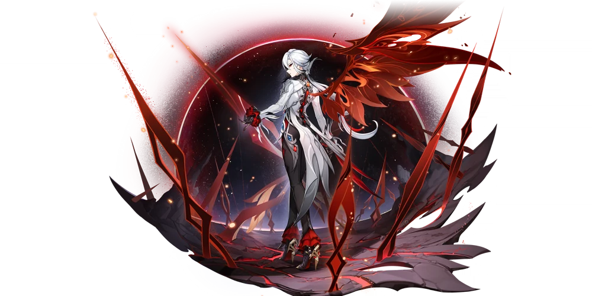

Арлекино
 Слуга, сетвёртая из Предвестников Фатуи, "Отец", которого почитают дети Дома очага.
Слуга, сетвёртая из Предвестников Фатуи, "Отец", которого почитают дети Дома очага.
Регион: Снежная
Глаз Бога: Пиро
Оружие: копье
Созвездие: Очищающий Огонь
Созвездие персонажа
Выпадение персонажа
Карточка персонажа
О персонаже:
Особняк «Буфф д'эте», расположенный в пассаже Вазари, представляет собой красивейшее здание с белыми стенами и сверкающими окнами. Каждый день в воротах особняка можно увидеть опрятных воспитанных детей. Отличие «Буфф д'эте» от прочих изысканных особняков Кур-де-Фонтейна заключается в том, что хозяйка здания, указанная в документах, не проживает на территории особняка. Мало того, о ней никто даже не слышал. Документы выданы на фиктивное имя, а настоящая власть здесь принадлежит совсем другому человеку. Когда ворота особняка закрываются на ночь, в детском шёпоте то и дело звучит одно и то же слово: «Отец». Упоминание об «Отце» в одних детях рождает благоговение, в других страх, третьи терзаются смешанными чувствами. Но все до одного говорят об «Отце» с большим уважением. Все эти дети - воспитанники Дома очага, все они Фатуи. Дом очага - приют для сирот со всего мира, и роскошный особняк лишь одна из его ипостасей. А «Отец» - настоящая хозяйка Дома очага, известная под именем Арлекино, Слуга, четвёртая из Предвестников Фатуи. Фатуи, как и четвёртая Предвестница, пользуются у людей неоднозначной славой. Но для большинства детей «Отец» - самый важный человек в их жизни. «Только благодаря "Отцу" наш приют становится настоящим "домом"».
История 1(ур др 2):
Почти каждый, кто имел дело со Слугой, чувствовал на себе невидимую гнетущую тяжесть, которая от неё исходит. Слуга с лёгкостью завладевает инициативой в любом разговоре, и под взглядом её необычных глаз мало кому удаётся оставить свои тайны при себе. С врагами она обращается без снисхождения, играючи расправляется с любой опасностью и в конце даже приводит в порядок поле боя, чтобы не пугать людей понапрасну. Но страшно в ней вовсе не это. Все страхи рождаются из «неизвестности». Даже дети, которые каждый день имеют дело со Слугой, не могут сказать, что понимают её. Никто не знает, что она любит, а что ненавидит, о чём думает, когда смотрит на море. Каждый август дети ломают голову над тем, что подарить ей на день рождения, и никогда не могут угадать, понравится ей подарок или нет. А в прошлом году на Фремине соскочил с потолка геккон, напугав его до полусмерти. Подоспевшая тут же Линетт быстро схватила незваного гостя, бросила на стол и накрыла сверху пиалой. Придя домой, Слуга забрала геккона вместе с пиалой в счёт подарка на день рождения. Наутро Лини вошёл в кабинет «Отца» с докладом и увидел на столе террариум, в котором сидел вчерашний гость. Геккон явно радовался жизни, сидя в террариуме с комфортной температурой и влажностью. Похоже, у «Отца» имелся опыт содержания рептилий. Слуга взяла чашку чая, и Лини отвёл взгляд от террариума, но про геккона не забыл. Дети пользуются любой возможностью, чтобы стать ближе к своему «Отцу». Следующие несколько дней Лини, Линетт и Фремине собирали информацию о выращивании гекконов в домашних условиях, надеясь поделиться важными сведениями с «Отцом» при следующей встрече. Но когда Лини снова вошёл в её кабинет, террариум был уже пуст. «Отец... А где же геккон?» «Он несколько раз пытался открыть крышку террариума, поэтому я выпустила его на свободу. Мы провели вместе немного времени, но это был его выбор». Слуга говорила очень спокойно. Увидев растерянность на лице Лини, она указала пальцем на птицу, которая заглядывала в окно с улицы. «Да, вскоре после освобождения из террариума геккон угодил прямо ей в брюхо... Она думает, у меня тут есть добавка. Прогони её, пожалуйста».
История 2(ур др 3):
Тщеславие - неотъемлемая часть человеческой натуры, и дети, вступая в подростковый возраст, постепенно знакомятся с тем, что красиво, а что безобразно. Они начинают тайком носить украшения, выстригают себе чёлку ножницами. «Отец» не возражает и смотрит на эти маленькие бунты сквозь пальцы. Но если ребёнок отказывается снять ожерелье и во время ночной операции выдаёт своё положение его звоном, «Отцу» приходится вмешаться. И вот Арлекино с изящной сумочкой в руке входит в комнату провинившейся девушки. Понимая, что допустила ошибку, девушка давно сняла ожерелье и положила на стол, а сама теперь стоит рядом, дрожа от страха. Арлекино взяла ожерелье в руки, оглядела его, затем подошла к девушке и надела его на гладкую шею. После чего отвела мягкие золотые волосы от ушей девушки. «О, ты сама проколола уши». «Отец» достала из своей сумочки бархатную ленту и серьги с драгоценными камнями, лентой она повязала девушке волосы, а серьги продела в уши. Затем, взяв воспитанницу за плечи, она подвела её к зеркалу. Девушка в отражении была подобна цветущей розе, украшенной драгоценными камнями. Красота её была бесспорна, хотя на лице читалась тревога. «В твоём возрасте нормально любить наряжаться. Но не позволяй милым безделушкам раздуть твоё тщеславие и притупить ум». «Простите меня, Отец, - со страхом в голосе проговорила девушка. Дрожащими руками она потянулась к серьгам, пытаясь их расстегнуть. - Больше такого не повторится, обещаю...» Но на спокойном лице «Отца» лежала неизменная улыбка. «Тсс... Не волнуйся. Люди склонны стремиться к недоступному, и я не хочу, чтобы твои воспоминания о красоте были отравлены сожалением. Серьги оставь себе. Привыкнув к ним, ты поймёшь, что даже самый драгоценный и изысканный камень всего лишь кусок холодной мёртвой материи. Это новый урок, который тебе предстоит выучить. Ты должна найти источник своих эмоций. Подчини их себе, используй в свою пользу. И не вздумай идти у них на поводу».
История 3(ур др 4):
Пока «Отец» не переписала правила, Дом очага выглядел совсем иначе. Предыдущая Слуга носила имя Крукабена. Конечно, мало кто мог обращаться к ней по имени, дети звали Крукабену «Матерью». И она казалась идеальной «Матерью»: улыбчивая, нежная, заботливая, всегда готовая рассказать детям интересную историю. Вот только у людей, которые росли в нормальных семьях, от её историй волосы встали бы дыбом... Она облекала в сказку немыслимую жестокость, она заставляла детей убивать друг друга, чтобы избрать «короля», сильнейшего из сильных. Она называла себя матерью, но никогда не считала детей своей семьёй. Для неё бесконечная череда жертвоприношений была всего лишь занятным экспериментом. ... Прежде чем стать Слугой и получить имя Арлекино, она звалась Перуэр. Как и все дети Дома очага, она была сиротой, не знавшей настоящего дома, одной из дочерей своей «Матери». Ни для кого не было секретом, что «Мать» благоволила к ней и заботилась о Перуэр даже больше, чем о собственной дочери Клерви. И никто не понимал, почему Перуэр отплатила «Матери» за доброту страшным убийством. Безумные эксперименты Крукабены проводились вдали от посторонних глаз, о них почти никто не знал. И когда Перуэр расправилась с Крукабеной, на неё легло клеймо матереубийцы, люди верили, что она способна на всё. ... Пыль осела, но Арлекино, некогда носившая имя Перуэр, не стала рассеивать заблуждения. Она и пальцем не пошевелила, чтобы опровергнуть слухи, наоборот, раздувала их ещё сильнее. Что дипломату, что профессиональному убийце выгоднее всего видеть противника насквозь, оставаясь при этом в тени. На месте убийства «Матери» стоит небольшое надгробие, на котором рукой Арлекино написано несколько слов: «Здесь похоронен свет закатного солнца. Здесь встречают солнце нового дня».
История 4(ур др 5):
Чтобы скрыть своё происхождение и уничтожить огнём правду, Арлекино обычно называет себя уроженкой Фонтейна. Однако правда заключается в том, что с самого детства она обнаружила в себе способность управлять неким странным пламенем. В её «семье» никто не слышал о подобных способностях, и остальным детям было очень любопытно, что это за пламя. Но самой Перуэр её способность казалась не поводом для хвастовства, а проклятием, от которого невозможно избавиться. Стоило ей ослабить контроль, и сила начинала бушевать, разъедая её тело. Сначала пальцы, затем ладони и предплечья... Кожа с чёрными отметинами напоминала обугленное дерево. У Арлекино было смутное предчувствие: если однажды чёрная тень доползёт до плеча и перебросится на сердце, это навсегда «изменит» её сущность. Возможно, именно тогда судьба раскрыла перед ней свои карты. ... Пламя не только разъедало её тело, оно приносило Арлекино и другие мучения. Все люди, павшие жертвами её огня, оставляли после себя фантомы. Иногда фантомы принимали форму воспоминаний, а иногда превращались в ослепительные краски. Постепенно число её жертв росло, и Арлекино начала слышать голоса. Крики, стоны, проклятия будили её посреди ночи, но скоро она к этому привыкла. Всё равно она почти не видела снов, которые хотелось запомнить: чаще всего ей снилась дикая пустошь, озарённая алой луной. Изредка от некоторых жертв остаются достаточно сохранные фантомы, наделённые «сознанием». Конечно, до «фантома Клерви» им далеко, но порой они появляются рядом с Арлекино, чтобы отогнать другие голоса и дать ей короткую передышку. Как занятые игрой дети, они то собираются вокруг неё, то вдруг бросаются врассыпную. Арлекино помнит, кем они были до того, как умереть. Но никогда не называет их по имени.
История 5(ур др 6):
Встретившись с Царицей, получив Глаз Порчи и приняв имя «Арлекино», молодая Слуга была удостоена отдельной аудиенции у Шута. Лицо Пьеро было скрыто за полумаской. «Я знаю, что в твоей душе остались сомнения и недовольство. Поэтому я готов ответить на пять твоих вопросов о мире... или о тебе самой. Не нужно требовать у меня гарантий относительно планов Фатуи или идеалов Её Величества. На эти вопросы я ответил бы без всяких оговорок». Арлекино не до конца верила искренности Шута. «Тогда я должна предупредить, что не приму в качестве ответов туманные намёки, словесные игры и откровенную ложь». - «Весьма благоразумно. В таком случае позволь ответить на первый вопрос, который ты хочешь задать. Почему мы выбрали тебя и почему ты согласилась? "Наивный человек умрёт за свои идеалы. И лишь готовность цепляться за жизнь, чтобы добиться цели, есть признак зрелости"». ... «Третий вопрос. Как связана моя сила и навязчивые сны об алой луне?» «Когда-то я служил последней династии древнего подземного царства. Та династия называлась "Чёрное Солнце", а предшествовала ей династия "Алой Луны". Что до тайн, существовавших до твоего рождения... Советую тебе прочесть книгу под названием "Влюблённый Хлеоланд". В те годы, когда я стремился к научным знаниям, я не читал подобных историй, книга попала ко мне случайно. И пусть сюжет вымышлен, в ключевых подробностях книга точна». ... «Вопрос пятый. Что станет со мной и остальными детьми Дома очага, когда всё закончится?» «Буду откровенен. В моих идеалах нет для вас места, поскольку я следую "добродетели глупости". Но могу заверить тебя, что в самом конце наша Царица вновь станет богом, который любит всех людей и стремится исполнить заветное желание каждого человека». И хотя слова про «добродетель глупости» были весьма туманны, Арлекино приняла такой ответ. Шут ответил на пять вопросов, и дымка, застилавшая ей глаза, начала рассеиваться. «Арлекино, - окликнул её Пьеро, когда она была уже на пороге. - Чем ломать голову над тем, каков мир сейчас, задумайся о том, куда он движется». Ответом Шуту стал звук её удаляющихся шагов.
«Марель»
Для соблюдения секретности и безопасности во время операций дети Дома очага пользуются всевозможными кодовыми словами, и слово «марель» ввела в оборот сама Слуга. Вообще-то «марелью» называется известная в Фонтейне детская игра: на земле чертят мелом поле с пронумерованными клетками, бросают туда мешочек с песком, и игроки в определённом порядке прыгают друг за другом с клетки на клетку. Никто не знает, откуда пошла эта игра и кто придумал правила, но старшие дети Дома очага всегда водят малышей играть в «марель». Весёлые прыжки, заливистый смех... Слово «марель» связано у детей только с самыми приятными, тёплыми и солнечными воспоминаниями. И детям было невдомёк, почему «Отец» раздумывает, какое значение присвоить этому шифру: «безопасно» или «тревога». Они не знали, что в прежнем Доме очага словом «марель» обозначалась вовсе не весёлая игра. Тогда дети прыгали по расчерченному клетками полю под бдительным надзором взрослых. Заступать за границы клеток и сбиваться с ритма не разрешалось. Все знали, каким будет наказание за неудачный прыжок, ведь снаружи каждой клетки торчали острые лезвия. Потеряв равновесие, сбившись с ритма, оступившись от страха... дети падали на лезвия, и тёмно-красная земля до сих пор хранит в себе память о той боли. При слове «марель» подопечные Дома очага менялись в лице, никому бы в голову не пришло назвать это испытание безопасным. И всё же после некоторых раздумий Арлекино решила присвоить шифру «марель» значение «безопасно». Ведь в наши дни «марель» больше не ассоциируется с тревогой. Теперь при упоминании этой игры дети первым делом вспоминают свои радостные улыбки. В таком случае, подумала она, пусть тягостные воспоминания останутся только в моём сердце. Пусть кровь и тлен уйдут в небытие, а дети видят впереди широкий и неомрачённый горизонт.
Глаз Бога(ур др 6):
Сила Арлекино происходит из нескольких источников. Первый источник - древнее Пламя роковой луны, что горит в её жилах, благородная кровь, похожая сразу и на проклятие, и на благословение. Милосердная Царица простила Арлекино матереубийство и пожаловала её почётным Глазом Порчи, символом царского благоволения. Это третий источник силы Арлекино. А вторым стал Глаз Бога, который она получила, будучи ещё не Арлекино, а Перуэр. Когда Клерви была жива, Перуэр поделилась с ней планом убийства «Матери». Клерви отказалась участвовать в исполнении плана: быть может, ей не хватало уверенности в своих силах, а возможно, её останавливали узы крови. Жизнь Клерви оборвалась, когда её тело пронзило холодным лезвием. Но в последнюю секунду перед смертью Клерви была счастлива, ведь она наконец обрела желанную свободу. А шестерёнки судьбы Перуэр, которой удалось выжить в том поединке, только начинали вращаться. Эксперимент по выбору «короля» завершился, но «Мать» не собиралась смирять свои амбиции. И Перуэр решила осуществить задуманное в одиночку. С того дня она молча размышляла о том, какая пропасть отделяет её от «Матери». Все её боевые навыки были выпестованы «Матерью», и «Мать» прекрасно знала о силе, что течёт в её жилах. А ребёнок, пусть даже самый сильный в Доме очага, рядом с «Матерью» всё равно остаётся неоперившимся птенцом. Но тяжёлая жизнь Перуэр приучила её не сдаваться. Тело Перуэр было покрыто шрамами от постоянных сражений, руки чернели отметинами, оставленными Пламенем роковой луны, с которым она не всегда могла совладать, но Перуэр продолжала день за днём оттачивать своё боевое мастерство. И одной лунной ночью без всякого предзнаменования перед ней появился Глаз Бога. Круглый Глаз Бога повис в воздухе, наложившись на бледный диск луны и окрасив её своим мерцанием в алый цвет. Её желание исполнилось? Или Глаз Бога родился из размышлений, что не оставляли её долгими днями и ночами? Перуэр не знала, но это было и не важно. Она спокойно спрятала Глаз Бога у самого сердца, чтобы несколько позже преподнести «Матери» небольшой «сюрприз». Как Предвестница Фатуи, Арлекино не склоняется ни перед какими богами, но всё равно бережёт Глаз Бога, символ семи Архонтов. Ведь он стал доказательством вызова, который она бросила судьбе, доказательством того, что отныне она сама распоряжается своим будущим.